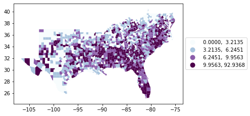
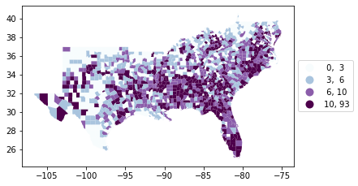
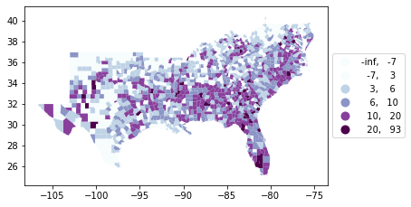
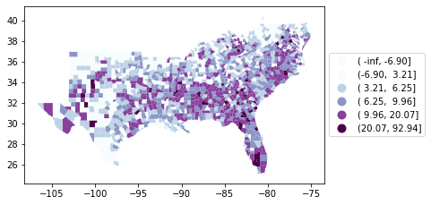
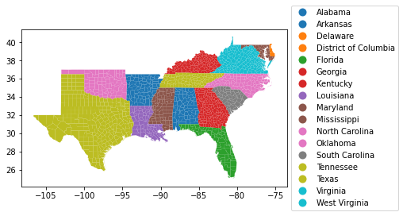

Note
This page was generated from gallery/choro_legends.ipynb.
Interactive online version: 
Choro legends#
[1]:
import geopandas
from geopandas import read_file
[2]:
import mapclassify
mapclassify.__version__
[2]:
'2.4.2'
[3]:
import libpysal
libpysal.__version__
[3]:
'4.4.0'
[4]:
libpysal.examples.available()
Name Description Installed
0 10740 Albuquerque, New Mexico, Census 2000 Tract Data. 10740 i... True
1 AirBnB Airbnb rentals, socioeconomics, and crime in Chicago False
2 Atlanta Atlanta, GA region homicide counts and rates False
3 Baltimore Baltimore house sales prices and hedonics False
4 Bostonhsg Boston housing and neighborhood data False
5 Buenosaires Electoral Data for 1999 Argentinean Elections False
6 Charleston1 2000 Census Tract Data for Charleston, SC MSA and counties False
7 Charleston2 1998 and 2001 Zip Code Business Patterns (Census Bureau... False
8 Chicago Health Chicago Health + Socio-Economics False
9 Chicago commpop Chicago Community Area Population Percent Change for 20... False
10 Chicago parcels Tax parcel polygons of Cook county False
11 Chile Labor Labor Markets in Chile (1982-2002) False
12 Chile Migration Internal Migration in Chile (1977-2002) False
13 Cincinnati 2008 Cincinnati Crime + Socio-Demographics False
14 Cleveland 2015 sales prices of homes in Cleveland, OH. False
15 Columbus Columbus neighborhood crime False
16 Elections 2012 and 2016 Presidential Elections False
17 Grid100 Grid with simulated variables False
18 Groceries 2015 Chicago supermarkets False
19 Guerry Moral statistics of France (Guerry, 1833) False
20 Health Indicators Chicago Health Indicators (2005-11) False
21 Health+ 2000 Health, Income + Diversity False
22 Hickory1 2000 Census Tract Data for Hickory, NC MSA and counties False
23 Hickory2 1998 and 2001 Zip Code Business Patterns (Census Bureau... False
24 Home Sales 2014-15 Home Sales in King County, WA False
25 Houston Houston, TX region homicide counts and rates False
26 Juvenile Cardiff juvenile delinquent residences False
27 Lansing1 2000 Census Tract Data for Lansing, MI MSA and counties False
28 Lansing2 1998 and 2001 Zip Code Business Patterns (Census Bureau... False
29 Laozone Ozone measures at monitoring stations in Los Angeles basin False
30 LasRosas Corn yield, fertilizer and field data for precision agr... False
31 Line Line Shapefile True
32 Liquor Stores 2015 Chicago Liquor Stores False
33 Malaria Malaria incidence and population (1973, 95, 93 censuses... False
34 Milwaukee1 2000 Census Tract Data for Milwaukee, WI MSA False
35 Milwaukee2 1998 and 2001 Zip Code Business Patterns (Census Bureau... False
36 NCOVR US county homicides 1960-1990 True
37 NDVI Normalized Difference Vegetation Index grid False
38 NYC Demographic and housing data for New York City subborou... False
39 NYC Earnings Block-level Earnings in NYC (2002-14) False
40 NYC Education NYC Education (2000) False
41 NYC Neighborhoods Demographics for New York City neighborhoods False
42 NYC Socio-Demographics NYC Education + Socio-Demographics False
43 Natregimes NCOVR with regimes (book/PySAL) False
44 Nepal Health, poverty and education indicators for Nepal dist... False
45 Ohiolung Ohio lung cancer data, 1968, 1978, 1988 False
46 Orlando1 2000 Census Tract Data for Orlando, FL MSA and counties False
47 Orlando2 1998 and 2001 Zip Code Business Patterns (Census Bureau... False
48 Oz9799 Monthly ozone data, 1997-99 False
49 Phoenix ACS Phoenix American Community Survey Data (2010, 5-year av... False
50 Pittsburgh Pittsburgh homicide locations False
51 Point Point Shapefile True
52 Police Police expenditures Mississippi counties False
53 Polygon Polygon Shapefile True
54 Polygon_Holes Example to test treatment of holes True
55 Rio Grande do Sul Cities of the Brazilian State of Rio Grande do Sul True
56 SIDS North Carolina county SIDS death counts False
57 SIDS2 North Carolina county SIDS death counts and rates False
58 Sacramento1 2000 Census Tract Data for Sacramento MSA True
59 Sacramento2 1998 and 2001 Zip Code Business Patterns (Census Bureau... True
60 SanFran Crime July-Dec 2012 crime incidents in San Francisco (points ... False
61 Savannah1 2000 Census Tract Data for Savannah, GA MSA and counties False
62 Savannah2 1998 and 2001 Zip Code Business Patterns (Census Bureau... False
63 Scotlip Male lip cancer in Scotland, 1975-80 False
64 Seattle1 2000 Census Tract Data for Seattle, WA MSA and counties False
65 Seattle2 1998 and 2001 Zip Code Business Patterns (Census Bureau... False
66 Snow John Snow & the 19th Century Cholera Epidemic False
67 South US Southern county homicides 1960-1990 True
68 Spirals Synthetic spiral points False
69 StLouis St Louis region county homicide counts and rates False
70 Tampa1 2000 Census Tract Data for Tampa, FL MSA and counties False
71 US SDOH 2014 US Social Determinants of Health Data False
72 arcgis arcgis testing files True
73 baltim Baltimore house sales prices and hedonics, 1978. True
74 berlin Prenzlauer Berg neighborhood AirBnB data from Berlin True
75 book Synthetic data to illustrate spatial weights True
76 burkitt Burkitt's lymphoma in the Western Nile district of Uganda True
77 calemp Employment density for California counties True
78 chicago Chicago neighborhoods True
79 clearwater mgwr testing dataset False
80 columbus Columbus neighborhood crime data 1980 True
81 desmith Small dataset to illustrate Moran's I statistic True
82 geodanet Datasets from GeoDaNet for network analysis True
83 georgia Various socio-economic variables for counties within the... True
84 juvenile Residences of juvenile offenders in Cardiff, UK True
85 mexico Decennial per capita incomes of Mexican states 1940-2000 True
86 networks Datasets used for network testing True
87 newHaven Network testing dataset False
88 nyc_bikes New York City Bike Trips False
89 sids2 North Carolina county SIDS death counts and rates True
90 snow_maps Public water pumps and Cholera deaths in London 1854 (Jo... True
91 stl Homicides and selected socio-economic characteristics fo... True
92 street_net_pts Street network points True
93 taz Traffic Analysis Zones in So. California False
94 tokyo Tokyo Mortality data True
95 us_income Per-capita income for the lower 48 US states 1929-2009 True
96 virginia Virginia counties shapefile True
97 wmat Datasets used for spatial weights testing True
[5]:
_ = libpysal.examples.load_example("South")
pth = libpysal.examples.get_path("south.shp")
[6]:
df = read_file(pth)
Default legend formatting#
[7]:
%matplotlib inline
ax = df.plot(
column="HR60",
scheme="QUANTILES",
k=4,
cmap="BuPu",
legend=True,
legend_kwds={"loc": "center left", "bbox_to_anchor": (1, 0.5)},
)

[8]:
labels = [t.get_text() for t in ax.get_legend().get_texts()]
labels
[8]:
[' 0.00, 3.21', ' 3.21, 6.25', ' 6.25, 9.96', ' 9.96, 92.94']
[9]:
q4 = mapclassify.Quantiles(df.HR60, k=4)
q4
[9]:
Quantiles
Interval Count
----------------------
[ 0.00, 3.21] | 353
( 3.21, 6.25] | 353
( 6.25, 9.96] | 353
( 9.96, 92.94] | 353
[10]:
labels == q4.get_legend_classes()
[10]:
False
Note that in this case, the first interval is closed on the minimum value in the dataset. The other intervals have an open lower bound. This can be now displayed in the legend using legend_kwds={'interval': True}.
Overriding numerical format#
[11]:
ax = df.plot(
column="HR60",
scheme="QUANTILES",
k=4,
cmap="BuPu",
legend=True,
legend_kwds={"loc": "center left", "bbox_to_anchor": (1, 0.5)},
)

[12]:
ax = df.plot(
column="HR60",
scheme="QUANTILES",
k=4,
cmap="BuPu",
legend=True,
legend_kwds={"loc": "center left", "bbox_to_anchor": (1, 0.5), "fmt": "{:.4f}"},
)

[13]:
ax = df.plot(
column="HR60",
scheme="QUANTILES",
k=4,
cmap="BuPu",
legend=True,
legend_kwds={"loc": "center left", "bbox_to_anchor": (1, 0.5), "fmt": "{:.0f}"},
)

The new legends_kwds arg fmt takes a string to set the numerical formatting.
When first class lower bound < y.min()#
[14]:
ax = df.plot(
column="HR60",
scheme="BoxPlot",
cmap="BuPu",
legend=True,
legend_kwds={"loc": "center left", "bbox_to_anchor": (1, 0.5), "fmt": "{:.0f}"},
)

[15]:
bp = mapclassify.BoxPlot(df.HR60)
bp
[15]:
BoxPlot
Interval Count
----------------------
( -inf, -6.90] | 0
(-6.90, 3.21] | 353
( 3.21, 6.25] | 353
( 6.25, 9.96] | 353
( 9.96, 20.07] | 311
(20.07, 92.94] | 42
[16]:
bp.get_legend_classes(fmt="{:.0f}")
[16]:
['(-inf, -7]',
'( -7, 3]',
'( 3, 6]',
'( 6, 10]',
'( 10, 20]',
'( 20, 93]']
In some classifiers the user should be aware that the lower (upper) bound of the first (last) interval is not equal to the minimum (maximum) of the attribute values. This is useful to detect extreme values and highly skewed distributions.
Show interval bracket#
[17]:
ax = df.plot(
column="HR60",
scheme="BoxPlot",
cmap="BuPu",
legend=True,
legend_kwds={"loc": "center left", "bbox_to_anchor": (1, 0.5), "interval": True},
)

Categorical Data#
[18]:
ax = df.plot(
column="STATE_NAME",
categorical=True,
legend=True,
legend_kwds={"loc": "center left", "bbox_to_anchor": (1, 0.5), "fmt": "{:.0f}"},
) # fmt is ignored for categorical data
